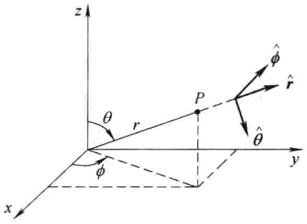

点P的球坐标为：\((r,\theta,\phi)\).
球坐标\((r,\theta,\phi)\)与直角坐标\((x,y,z)\)的关系为：
$$x = r\sin\theta\cos\phi$$ $$y = r\sin\theta\sin\phi$$ $$z = r\cos\theta$$柱坐标\(r,\phi,z\)与直角坐标\(x,y,z\)的关系为：
| $$r$$ | $$\phi$$ | |
| $$x$$ |
$$\frac{\partial r}{\partial x} = \cos\phi$$
$$\because r = \sqrt{x^2 + y^2}$$
$$\therefore \frac{\partial r}{\partial x} = \frac{1}{2\sqrt{x^2 + y^2}}\cdot 2x = \frac{x}{r}$$
$$\because x = r\cos\phi$$
$$\therefore \frac{\partial r}{\partial x} = \cos\phi$$
|
$$\frac{\partial\phi}{\partial x} = -\frac{\sin\phi}{r}$$
$$\because \phi = \arctan\frac{y}{x}$$
$$\therefore \frac{\partial\phi}{\partial x} = \frac{1}{1 + \left(\frac{y}{x}\right)^2}\cdot -\frac{y}{x^2} = -\frac{y}{x^2 + y^2}$$
$$\because y = r\sin\phi,\quad r = \sqrt{x^2 + y^2}$$
$$\therefore \frac{\partial\phi}{\partial x} = -\frac{\sin\phi}{r}$$
|
| $$y$$ |
$$\frac{\partial r}{\partial y} = \sin\phi$$
$$\because r = \sqrt{x^2 + y^2}$$
$$\therefore\frac{\partial r}{\partial y} = \frac{1}{2\sqrt{x^2 + y^2}}\cdot 2y = \frac{y}{r}$$
$$\because y = r\sin\phi$$
$$\therefore\frac{\partial r}{\partial y} = \sin\phi$$
|
$$\frac{\partial\phi}{\partial y} = \frac{\cos\phi}{r}$$
$$\because \phi = \arctan\frac{y}{x}$$
$$\frac{\partial\phi}{\partial y} = \frac{1}{1 + \left(\frac{y}{x}\right)^2}\cdot \frac{1}{x} = \frac{x}{x^2 + y^2}$$
$$\because x = r\cos\phi,\quad r = \sqrt{x^2 + y^2}$$
$$\therefore\frac{\partial\phi}{\partial y} = \frac{\cos\phi}{r}$$
|